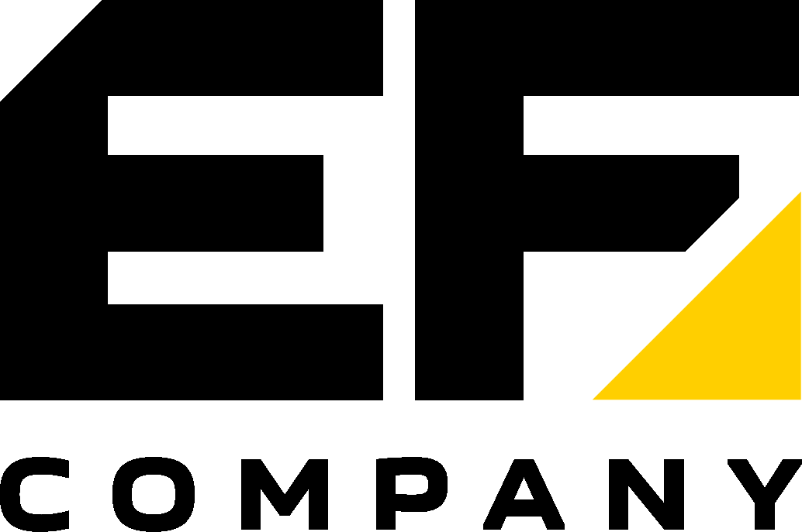
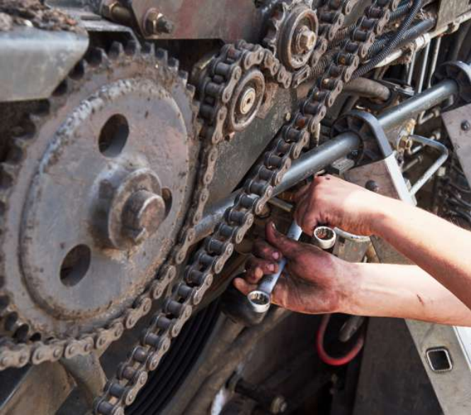
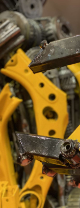
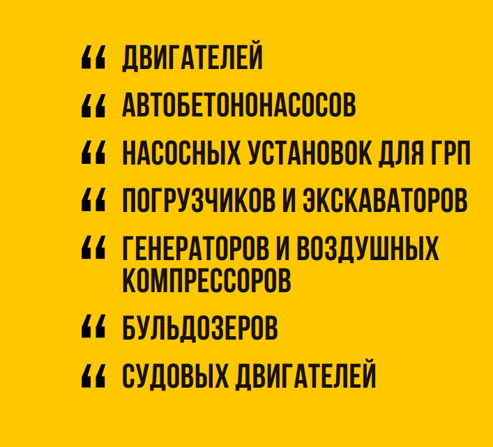

На протяжении 10 лет наша компания успешно работает на отечественном рынке предоставления услуг капитального ремонта всех видов спецтехники и судовых двигателей. За время своей работы мы выполнили сотни проектов, завоевав доверие, как частных клиентов, так и крупных предприятий.
Мы гарантируем вам высочайшее качество предоставляемых услуг и соблюдений всех договоренностей.
Также мы занимаемся поставкой оригинальных запасных частей для спецтехники производств Caterpillar, Cummins, Deutz, Hitachi, Perkins, Doosan и т.д.
ЛУЧШИЕ ЦЕНЫ
Имея прямые выходы на
заводы изготовителей, наша
компания может предложить
своим клиентам самые
выгодные цены.
КОМАНДА
СПЕЦИАЛИСТОВ
Все работники «EngineFix Company» обладают необходимой квалификацией и опытом, которыми всегда рады поделиться с клиентом.
ДОСТАВКА ПО КАЗАХСТАНУ
Чтобы получить заказанную запасную часть, вы легко сможете оформить доставку в любую точку Казахстана и СНГ.
Комфортные условия
Нашей главной задачей является создание лучших условий для ремонта вашей техники и приобретения запасных частей.



Компания EngineFix Company специализируется на техническом обслуживании и ремонте двигателей спецтехники, автобетононасосов, насосных установок для ГРП, погрузчиков, экскаваторов, генераторов и воздушных компрессоров, бульдозеров, а также судовых двигателей. Наши мастера обладают большим опытом и отличными практическими навыками для эффективной диагностики и ремонта. В числе наших услуг электронная диагностика, исследование технического состояния узлов и агрегатов техники, плановое обслуживание и капитальный ремонт. Также специалисты могут провести полное или частичное ТО, оказать помощь в его планировании, дать экспертные рекомендации по заказу запчастей. Свяжитесь с нами для получения консультаций и помощи по подбору деталей.